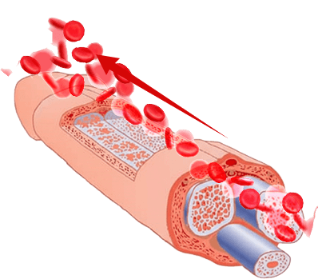
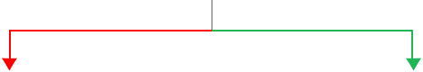
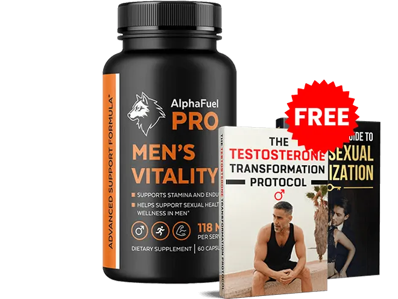

Une découverte archéologique stupéfiante révèle :
Pourquoi les légionnaires romains jouissaient d'une virilité légendaire... et comment vous pouvez restaurer votre puissance hydraulique naturelle en seulement 15 jours
Un chercheur pharmaceutique examine des restes romains vieux de 2 000 ans et découvre la cause cachée des troubles érectiles modernes... et pourquoi les produits que vous utilisez au quotidien détruisent systématiquement le système de soupapes naturelles de votre corps
Sa femme menaçait de divorcer — malgré des milliers d'euros dépensés en traitements contre la DE et en médicaments sur ordonnance... jusqu'à ce que d'anciennes ruines romaines révèlent la vérité troublante sur ce qui détruit vraiment la fonction sexuelle masculine

IMPORTANT :
Ce que vous êtes sur le point d'apprendre pourrait sauver votre couple —
mais l'industrie milliardaire de la DE ne veut pas que vous le sachiez
Je m'appelle Jake Stevens, et ce que je vais vous révéler va peut-être vous surprendre...

Cela explique pourquoi vous souffrez encore d'érections insuffisantes... pourquoi l'anxiété de performance vient sans cesse gâcher vos moments intimes... même après avoir essayé les médicaments contre la DE et toutes les autres options de la médecine moderne.
Je suis coordinateur de recherche pharmaceutique spécialisé dans l'étude des populations antiques. Et aussi étrange que cela puisse paraître, ce travail a mis au jour des secrets sur la santé sexuelle masculine qui peuvent changer votre vie dès aujourd'hui.
Mais d'abord, une question...
Vous Reconnaissez-Vous Dans Ce Tableau ?
- Des érections qui démarrent fort, mais qui faiblissent exactement au mauvais moment
- La honte pesante de décevoir votre partenaire nuit après nuit
- Des médicaments sur ordonnance qui peinent à agir et provoquent des effets secondaires importants
- La crainte persistante que votre partenaire cherche quelqu'un capable de satisfaire ses besoins
- La contrainte de devoir planifier l'intimité 30 minutes à l'avance juste pour prendre un comprimé
Si vous hochez la tête, vous êtes sur le point de comprendre pourquoi aucun des traitements conventionnels n'a fonctionné jusqu'à présent...
Et surtout : comment un secret vieux de 2 000 ans peut améliorer votre fonction sexuelle en seulement 15 jours.
La Découverte Romaine Qui Change Tout
Au fil des années, j'ai étudié des milliers de restes antiques, mais rien ne m'avait préparé à ce que j'allais découvrir dans les ruines de la Rome antique.
Lorsque j'ai analysé les restes préservés de soldats romains — des hommes qui avaient conquis la majeure partie du monde connu à leur époque — j'ai fait une découverte extraordinaire.
Ces guerriers conservaient une virilité exceptionnelle bien au-delà de leurs 60 et 70 ans.
Les récits historiques décrivent leur endurance et leur vitalité sur des décennies entières...
Leur réputation de puissance virile était connue dans tout l'Empire.
Pourtant, au XXIe siècle, nous dépensons des milliards chaque année en médicaments contre la DE... et près d'un homme sur deux souffre de dysfonction érectile à partir de 50 ans.
Quel était le secret de ces anciens guerriers ?
Et surtout : quelle « habitude saine » du quotidien détruit silencieusement votre fonction de l'intérieur ?
Je peux vous dire d'emblée : ce n'est pas une question de génétique.
Ce n'est pas lié à votre état de santé général.
Et ça n'a rien à voir avec votre âge.
En réalité, cela tient à quelque chose qui se passe en profondeur dans votre corps et que la médecine moderne ignore complètement...
Quelque chose qui :
-

Bloque la circulation sanguine
vers les corps caverneux -
Empêche vos soupapes de pression
de fonctionner correctement -
Vous expose au risque d'un
dysfonctionnement sexuel permanent
L'Ultimatum De Ma Femme
(Et La Promesse Qui A Tout Changé)
Cette découverte a pris une dimension très personnelle lorsque ma femme Lisa m'a regardé droit dans les yeux au restaurant et m'a dit quelque chose qui m'a presque brisé...
« Tu ne m'as plus touchée depuis des mois, Jake. Est-ce que je t'indiffère vraiment ? »
Vous devez comprendre : Lisa et moi étions mariés depuis 22 ans. Nous avions toujours eu une vie intime épanouie — le genre de couple que les autres nous enviaient.
Mais au cours de l'année écoulée, j'avais lutté contre quelque chose que je n'aurais jamais imaginé vivre :
- Des érections qui démarraient fort, mais qui s'estompaient pendant les rapports
- Une anxiété de performance qui empirait tout
- Des effets secondaires qui me laissaient des vertiges et des nausées
- La honte écrasante de décevoir la femme que j'aimais
Si quelqu'un devait avoir accès aux meilleurs traitements, c'était bien moi — je travaille dans l'industrie pharmaceutique.
Mais durant les huit mois qui suivirent, j'ai dû assister impuissant à l'effondrement de mon mariage, littéralement sous mes yeux :
- Les échecs sont devenus une routine nocturne
- Lisa est devenue distante et frustrée
- J'ai développé une anxiété de performance paralysante
- Les médicaments sur ordonnance ne faisaient presque rien et me faisaient me sentir horrible
- La crainte constante qu'elle me quitte pour un autre homme
Le Tournant
Le pire est arrivé un soir que je n'oublierai jamais.
Lisa et moi étions au Romano's — le même restaurant où nous avions eu notre premier rendez-vous 22 ans plus tôt.
Je pensais que l'ambiance romantique nous rapprocherait à nouveau.
Mais lorsque je me suis absenté un instant, tout a basculé.
En revenant dans la salle, j'ai vu Lisa accoudée au bar, en grande conversation avec un bel homme en costume élégant.

Elle ne discutait pas simplement.
Elle était lumineuse. Elle riait. Elle jouait avec ses cheveux. Elle se penchait vers lui.
Elle rayonnait d'une façon que je n'avais plus vue depuis des mois.
Exactement comme elle me regardait autrefois, quand nous venions de nous rencontrer.
Quand l'homme est finalement parti, Lisa est revenue à notre table en essayant de minimiser la situation.
« Juste quelqu'un qui demandait la carte des vins », dit-elle avec désinvolture.
Mais j'avais tout vu.
Cette énergie. Cette attirance. Ce changement total dans son langage corporel.
C'est alors qu'elle a prononcé les mots qui m'ont presque détruit :
« J'ai besoin de me sentir désirée, Jake. J'ai besoin d'être touchée. Et si tu n'en es plus capable... il faudra peut-être que je trouve quelqu'un qui peut. »
Assis là à regarder tout s'effondrer, je me suis fait une promesse...
Je trouverais ce qui détruisait vraiment ma fonction sexuelle, peu importe le temps que cela prendrait ou jusqu'où cela me mènerait.
La Vérité Alarmante
Sur Les Traitements
Modernes De La DE
Ce qui m'a le plus perturbé : je n'étais pas seul.

Malgré des dépenses en traitements contre la DE plus élevées que jamais, les hommes souffrent aujourd'hui de dysfonctionnements sexuels plus fréquemment qu'à n'importe quelle autre époque.
D'après les études récentes :
-

40 % des hommes de plus de 40 ans souffrent de dysfonction érectile
-

52 % déclarent souffrir d'anxiété de performance lors des rapports sexuels
-
L'homme moyen dépense plus de 2 000 € par an en traitements contre la DE
Dans le monde entier, plus de 4 milliards d'euros sont dépensés chaque année en médicaments contre la DE... et pourtant les taux de dysfonction sexuelle ne cessent d'augmenter.
Il y avait manifestement quelque chose qui clochait.
Les Preuves Archéologiques
Dans mon travail sur les populations antiques, je savais que les sources historiques décrivaient systématiquement une fonction sexuelle bien supérieure chez les peuples anciens.
Les soldats romains étaient légendaires pour leur vitalité extraordinaire.
Les athlètes grecs conservaient leurs capacités jusqu'à un âge avancé.
Les textes antiques décrivent une vitalité qui semble presque inconcevable selon les standards d'aujourd'hui.
Comment est-ce possible ?

La Percée Scientifique Qui Explique Tout

Après quatre mois de recherches infructueuses, je me suis posé une question différente :
Comment est-il possible que le système sexuel masculin — conçu par l'évolution pour une reproduction fiable — tombe si facilement en panne chez les hommes modernes ?
Réfléchissez-y. Ce système a fonctionné parfaitement pendant des millénaires dans l'histoire de l'humanité.
Et aujourd'hui, avec tous nos progrès médicaux, il défaille à une échelle sans précédent ?

La Pièce Manquante Du Puzzle

C'est alors que j'ai découvert ce qui a tout changé :
Des études archéologiques récentes montrent que les populations antiques présentaient des profils cardiovasculaires et hormonaux radicalement différents des nôtres.
Ces hommes ne luttaient pas contre les troubles métaboliques que nous considérons aujourd'hui comme « normaux ».
Ils conservaient une circulation sanguine robuste, des taux hormonaux optimaux et une fonction sexuelle soutenue tout au long de leur vie.
Mais quelque part en chemin, nous avons perdu cette vitalité masculine naturelle.
L'Appel Qui A Tout Changé
Fin avril, j'ai reçu un appel qui allait tout bouleverser…

Pas seulement pour moi, mais pour des millions d'hommes souffrant de dysfonctionnements sexuels.
On m'offrait la possibilité d'étudier des restes provenant de la Rome antique — des guerriers et des citoyens conservés dans des conditions archéologiques exceptionnelles.
Il fallait quelqu'un avec mon expertise en pathologie ancienne pour analyser l'état de santé de ces restes extraordinairement bien préservés.
Et je l'avoue : j'ai accepté immédiatement.
Non seulement pour l'opportunité de recherche exceptionnelle, mais aussi parce que je cherchais désespérément des réponses pour ma propre relation.
Peut-être, juste peut-être, que l'étude de la physiologie des Romains antiques révélerait quelque chose que la médecine moderne avait négligé.
Je n'oublierai jamais mon premier jour dans ce laboratoire italien.
J'examinais les restes d'un centurion romain — un soldat de carrière qui avait atteint l'âge de 67 ans.

La conservation était si parfaite que je pouvais analyser des échantillons de tissus et des structures vasculaires qui disparaissent normalement dans les années suivant la mort.
Bien qu'âgé de presque 2 000 ans, son système cardiovasculaire présentait une intégrité remarquable.
Aucune obstruction artérielle, aucun signe des troubles métaboliques que l'on observe chez les hommes modernes.
Ses tissus producteurs d'hormones montraient des indices d'une fonction robuste, même à un âge avancé.
Le Moment De L'Illumination
Mais voilà ce qui m'a frappé comme un éclair…
Ce guerrier romain antique avait à peu près mon âge au moment de sa mort.
Pourtant, tandis que ma fonction sexuelle se dégradait — malgré l'accès à la « meilleure » médecine moderne disponible aujourd'hui…
Ce soldat antique, qui n'avait jamais entendu parler de médicaments contre la DE ni de thérapie de remplacement hormonal, avait conservé le profil cardiovasculaire et hormonal d'un homme bien plus jeune.

Je suis devenu obsédé.
Au cours des deux mois suivants, j'ai analysé avec l'équipe de recherche italienne les restes de 89 soldats et citoyens romains — jeunes et vieux, riches et modestes, issus de différentes régions de l'Empire.
Les résultats étaient stupéfiants :
-
présentaient une fonction cardiovasculaire optimale pour leur âge
-
possédaient des tissus producteurs d'hormones suggérant une fonction sexuelle robuste
-

Même les hommes dans la soixantaine et la soixante-dizaine affichaient des profils vasculaires comparables à ceux d'hommes modernes de 30 ans
En parallèle, je connaissais les statistiques de notre époque…
40 % des hommes de plus de 40 ans souffrent de DE, et nous dépensons des milliards chaque année en traitements qui peinent à fonctionner.
Comment des hommes qui vivaient il y a deux mille ans, sans nos possibilités médicales modernes, pouvaient-ils conserver une fonction sexuelle nettement supérieure à la nôtre aujourd'hui ?
Les Quatre Façons Dont La Médecine Moderne
Détruit Votre Puissance Sexuelle Naturelle
En analysant des échantillons de tissus au microscope électronique, j'ai découvert des schémas physiologiques totalement différents de tout ce que l'on observe chez les hommes modernes.

Les restes romains révélaient des systèmes cardiovasculaires robustes, une production hormonale optimale et aucun des troubles métaboliques qui affligent les hommes d'aujourd'hui.
Voici la vérité alarmante : les traitements qu'on nous dit être là pour sauver notre vie sexuelle sont en réalité la principale cause de nos problèmes sexuels.
Méthode de destruction n° 1 :
Le mensonge de l'industrie pharmaceutique

Les médicaments contre la DE forcent temporairement la circulation sanguine, mais abîment en réalité les mécanismes érectiles naturels de votre corps.
Ces médicaments agissent en manipulant artificiellement les voies du monoxyde d'azote — ce qui crée une dépendance et peut altérer durablement votre fonction naturelle.
Le système censé vous permettre des érections naturelles s'affaiblit à chaque comprimé avalé.
Méthode de destruction n° 2 :
Le piège de la testostérone

Le remplacement hormonal par testostérone synthétique éteint la production naturelle d'hormones de votre corps.
Ce qui commence comme un « traitement » devient une dépendance à vie qui aggrave souvent le problème.
Des études montrent que la TRT peut en réalité aggraver les problèmes cardiovasculaires et réduire la fonction sexuelle naturelle.
Méthode de destruction n° 3 :
L'agression du mode de vie

Les aliments transformés, les toxines environnementales et le stress chronique ont créé une tempête parfaite de dysfonction sexuelle.
Les hommes modernes sont exposés à des substances qui perturbent les hormones que les populations antiques n'ont jamais connues.
Notre mode de vie sédentaire et nos environnements stressants détruisent méthodiquement les systèmes qui maintiennent la fonction sexuelle.
Méthode de destruction n° 4 :
La catastrophe métabolique

L'explosion du syndrome métabolique, de la résistance à l'insuline et des inflammations chroniques a fondamentalement modifié la physiologie masculine.
Les preuves archéologiques sont sans équivoque : dès que les populations ont adopté une alimentation transformée et un mode de vie sédentaire, la dysfonction sexuelle a explosé.
La Meilleure Solution :
Restaurer Votre Puissance Hydraulique Naturelle
La percée n'a pas consisté à forcer davantage de circulation sanguine avec des médicaments...
Mais à réparer les mécanismes naturels qui ont maintenu la fonction sexuelle pendant des millénaires.
En collaboration avec des chercheurs de premier plan, j'ai identifié les composés précis capables de reproduire la physiologie sexuelle robuste que j'avais découverte dans les restes romains.
Mais il ne s'agissait pas d'ingrédients naturels quelconques. Chacun a été sélectionné sur la base d'une recherche clinique rigoureuse et de mécanismes d'action spécifiques qui s'attaquent à la véritable cause des dysfonctionnements sexuels modernes.
Les Dix Actifs Antiques

Urtica Dioica (Ortie piquante)
Le Régénérateur Des Soupapes De Pression
- Les soldats romains emportaient cette plante partout pour ses vertus sur la vitalité
- Contient des composés qui « débloquent » les soupapes obstruées dans votre système érectile
- Une étude de 2022 publiée dans Frontiers in Pharmacology a prouvé qu'elle détend les muscles lisses qui régulent la circulation sanguine
- Agit comme un passe-partout qui ouvre l'ensemble de votre système hydraulique
Eurycoma Longifolia (Tongkat Ali)
Le Booster De Testostérone
- Les guerriers d'Asie du Sud-Est l'utilisaient pour leur ardeur dans tous les domaines
- Plusieurs études cliniques montrent une augmentation de la testostérone allant jusqu'à 37 %
- Pas d'hormones synthétiques qui stoppent la production naturelle — mais votre propre testostérone, stimulée naturellement
- Une étude a suivi des hommes pendant 12 semaines — ils affichaient des taux hormonaux comparables à des hommes de 20 ans leur cadet

Epimedium (Herbe de chèvre lubrique)
Le Complément Naturel Contre La DE
- Utilisée par les empereurs chinois pour assumer leurs... nombreuses obligations
- Contient de l'icaréine — agit presque comme un médicament contre la DE, mais d'origine naturelle
- Bloque la même enzyme PDE5 que les médicaments sur ordonnance, sans les effets secondaires
- Des études montrent qu'elle produit un effet comparable aux médicaments contre la DE, mais de façon naturelle et sûre

Serenoa Repens (Palmier nain)
L'Optimiseur De Circulation Sanguine
- Bloque la même enzyme PDE5 que l'Epimedium pour améliorer la circulation sanguine
- Stimule la production de monoxyde d'azote — le « feu vert » pour les érections
- Bloque la conversion de la testostérone en DHT (le « jumeau maléfique » de la testostérone)
- Préserve davantage de bonne testostérone disponible et élimine la mauvaise

Extrait de racine d'igname sauvage
L'Activateur Des Voies De Signalisation
- Agit sur le même système de signalisation NO/GMPc que les médicaments contre la DE sur ordonnance
- Des études montrent une amélioration de la circulation sanguine vers les tissus reproducteurs
- Une autre clé qui ouvre d'autres portes de votre système hydraulique
- Offre un soutien naturel des voies de signalisation sans les effets secondaires pharmaceutiques

Bore
L'Optimiseur Hormonal
- Oligo-élément dont la plupart des hommes sont sévèrement carencés
- Des études montrent qu'il augmente la testostérone libre de jusqu'à 28 % en seulement une semaine
- Réduit simultanément l'œstrogène de 39 %
- Plus de testostérone + moins d'œstrogène = une fonction sexuelle nettement améliorée

Extrait de racine de salsepareille
Le Protecteur Du Système
- L'« équipe de nettoyage » qui maintient l'ensemble de votre système vasculaire en état
- Agit via des voies antioxydantes et anti-inflammatoires
- Maintient les vaisseaux sanguins sains et fonctionnant de façon optimale
- Votre système hydraulique n'est aussi solide que son maillon le plus faible — vos vaisseaux sanguins
L-Citrulline
Le Carburant Haute Performance Du Monoxyde D'Azote
- Les gladiateurs romains mangeaient de la pastèque — la source naturelle la plus riche en L-Citrulline — avant d'entrer dans l'arène. Non pas pour l'énergie. Pour la circulation sanguine.
- En 1998, trois scientifiques ont reçu le prix Nobel de médecine pour avoir découvert comment le monoxyde d'azote régule la vasodilatation. La L-Citrulline est le composé qui déclenche ce processus.
- Convertie en L-Arginine par les reins, elle fournit à vos vaisseaux sanguins le monoxyde d'azote dont dépendent vos érections
- Des études cliniques montrent qu'elle surpasse la supplémentation en L-Arginine seule — car elle résiste à la digestion, contrairement à la L-Arginine

Extrait d'écorce de pin (Pycnogenol®)
Le Nettoyeur Des Plaques Capillaires
- Les anciens marins méditerranéens mâchaient de l'écorce de pin durant les longues traversées pour maintenir leur circulation et leur endurance. Les médecins romains l'ont documentée dès 60 après J.-C. comme tonique vasculaire.
- Nécessite 18 mois d'une culture rigoureusement contrôlée pour atteindre la puissance clinique requise par la formule AlphaFuel — ce processus ne peut pas être accéléré, ce qui explique la limitation permanente des stocks
- Élimine physiquement les plaques microscopiques dans les capillaires — cette obstruction cachée que la plupart des hommes de plus de 40 ans portent sans le savoir
- En synergie avec la L-Citrulline, la voie du monoxyde d'azote primée est amplifiée jusqu'à 35 % — un résultat qu'aucun des deux composés n'atteint seul
Coenzyme Q10 (CoQ10)
Le Restaurateur D'Énergie Cellulaire
- Les médecins romains l'appelaient le « feu de vie » — ils observaient que les hommes qui perdaient leur vitalité perdaient d'abord leur chaleur intérieure. La science moderne en a confirmé la raison : le CoQ10 est l'étincelle qui alimente chaque cellule de votre système vasculaire.
- Votre taux naturel de CoQ10 chute de jusqu'à 65 % entre 20 et 80 ans — privant silencieusement les cellules qui tapissent vos vaisseaux sanguins de l'énergie nécessaire à leur dilatation à la demande
- Sans CoQ10, la testostérone et le monoxyde d'azote sont sans effet — vos cellules manquent tout simplement du carburant pour réagir
- Une étude de 2013 publiée dans le Journal of Sexual Medicine a établi un lien direct entre de faibles taux de CoQ10 et la sévérité de la dysfonction érectile — indépendamment de l'âge et de la testostérone
L'Effet De Synergie
Lorsque ces sept ingrédients agissent de concert, ils reproduisent la physiologie sexuelle sophistiquée que j'ai découverte dans les restes romains.
Chaque ingrédient joue un rôle spécifique, comme des spécialistes au sein d'une équipe médicale, chacun prenant en charge différents aspects de l'amélioration de la fonction sexuelle.

C'est la même vitalité naturelle que ces guerriers antiques conservaient... sans médicaments ni hormones synthétiques.
Mais les ingrédients seuls ne suffisaient pas...
Ils devaient être combinés dans des proportions précises et administrés de manière à maximiser l'absorption et l'efficacité.
Ma Transformation Étonnante
Quand j'ai préparé ma première version brute de cette formule antique dans une herboristerie romaine, j'étais sceptique. Qui ne l'aurait pas été ?
Mais j'étais désespéré, alors j'ai pris ma première dose avant le dîner.

Environ 20 minutes plus tard, quelque chose s'est produit — quelque chose que je n'avais pas ressenti depuis des mois.
Je ne saurais pas le décrire parfaitement, mais j'ai senti un signe de vie.

Comme de petits fourmillements électriques.
Du sang qui affluait dans cette direction et cherchait à s'engager.
Je me suis durci — pas complètement, mais notablement plus que depuis presque un an. Le lendemain, j'ai pris une autre dose.
Il n'a fallu que quelques minutes pour ressentir une sensation de relâchement.
Comme si quelque chose se libérait.
Je pouvais sentir le sang affluer pour combler les espaces qui s'ouvraient.
Ces espaces devenaient de plus en plus grands.
Et puis j'ai commencé à grossir, de plus en plus.
Jusqu'au moment où, en baissant les yeux, j'ai vu une érection durable — plus solide que tout ce que j'avais connu depuis de très, très longues années.
J'ai immédiatement rappelé Lisa dans notre chambre d'hôtel.
Ce qui s'est passé ensuite... je vous épargne les détails, mais trois heures plus tard, nous étions complètement épuisés et plus heureux que nous ne l'avions été depuis plus d'un an.
« Jake, » dit Lisa, haletante et souriante jusqu'aux oreilles, « je ne sais pas ce qui s'est passé, mais ce que tu as fait, il faut qu'on en ramène à la maison. »
De Vrais Hommes, De Vrais Résultats
Mark Engelman
témoigne :
« J'ai honte de l'admettre, mais ma femme et moi n'avions plus eu de rapports depuis presque un an et elle était sur le point de me quitter. AlphaFuel Pro n'a pas seulement restauré mon érection — il m'a rendu ma femme. Nous n'avons jamais été aussi heureux, et pourtant ce n'était que quelques nutriments naturels. Ce produit est remarquable. »

Robert T.
témoigne :
« J'arrive à peine à croire le changement depuis que je prends AlphaFuel Pro. L'érection est de retour, et le résultat m'a moi-même surpris ! Ce n'est pas une érection ordinaire — c'est mieux que jamais, et ça enchante ma femme. Tout le monde devrait essayer ça. Merci infiniment. »
David
de Lyon :
« Vous avez littéralement sauvé mon mariage. Ma femme et moi sommes mariés depuis 28 ans, et nous n'avions plus eu de rapports depuis 3 ans. Elle ne disait rien, mais je voyais la frustration grandir. J'étais convaincu qu'elle allait me quitter. Après seulement 2 semaines de votre protocole, je fonctionne mieux que dans ma vingtaine. Hier soir, ma femme m'a dit : « J'avais oublié à quel point ça me manquait. » Nous sommes comme des jeunes mariés à 55 ans. Je ne vous remercierai jamais assez. »

James
témoigne :
« J'ai tout essayé — médicaments contre la DE, injections de testostérone, dispositifs coûteux. Rien ne fonctionnait de façon fiable, et les effets secondaires étaient terribles. Votre protocole m'a redonné confiance en moi et une vie sexuelle épanouie. Plus besoin de planifier, plus de conversations gênantes chez le médecin. Juste une fonction naturelle, fiable, au moment voulu. »

Michael
témoigne :
« Mon médecin m'a dit que la DE faisait simplement partie du vieillissement et qu'il fallait l'accepter. C'est faux. Grâce à vos recherches, j'ai 52 ans et je performe comme à 25. Ma compagne n'en revient pas de la transformation. Elle m'a même demandé ce que je prenais parce qu'elle veut en parler à ses amies ! Mais honnêtement, le meilleur n'est même pas le résultat physique. C'est le retour de ma confiance en moi. Pour la première fois depuis des années, je me sens à nouveau un homme. »
Nous Vous Présentons
Votre Système De Régénération De La Puissance Hydraulique

Après deux ans de recherche, qui a débuté avec ces restes romains antiques, nous avons finalement développé AlphaFuel Pro — la première et unique formule naturelle capable de restaurer l'ancienne voie hydraulique naturelle de votre corps.
Ce Que Vous Recevez :

AlphaFuel Pro
Formule Naturelle
- Les 7 ingrédients cliniquement prouvés dans des proportions optimales
- Standards d'extraction et de pureté de qualité pharmaceutique
- Dosages précis basés sur la recherche clinique
- Gélules faciles à avaler pour une absorption maximale
- Approvisionnement pour 30 jours par flacon
Technologie Avancée De Réparation Hydraulique
- Cible la cause profonde — votre système de soupapes de pression
- Améliore la production naturelle de testostérone
- Optimise la circulation sanguine sans effets secondaires
- Opérationnel à tout moment sans planification préalable
- Renforce la confiance sexuelle et les performances sur le long terme
Et Ce N'Est Pas Tout —
Bonus De Recherche Exclusifs
BONUS N° 1 :
Le Guide Complet De L'Optimisation Sexuelle Masculine (valeur : 97 €)
GRATUIT
BONUS
#1
Guide de 47 pages avec des techniques avancées pour maximiser vos performances sexuelles, notamment la routine matinale de 5 minutes qui prépare votre système pour une disponibilité toute la journée, ainsi que des techniques qui épateront votre partenaire.
BONUS N° 2 :
Le Protocole De Transformation De La Testostérone (valeur : 127 €)

GRATUIT
BONUS
#1
Système étape par étape pour optimiser naturellement vos taux hormonaux, notamment les 7 changements de mode de vie qui peuvent doubler votre testostérone en 30 jours, ainsi que les aliments qui boostent la testostérone et ceux qui la détruisent.
Valeur totale des bonus : 224 $
Aujourd'hui OFFERTS pour vous
La Vraie Valeur
De Cette Percée
Pensez à ce que vous avez déjà dépensé pour la dysfonction sexuelle :

- La personne concernée moyenne dépense plus de 2 000 € par an en traitements contre la DE
- Un mois de médicaments contre la DE : plus de 400 €
- Thérapie de remplacement hormonal par testostérone : plus de 3 000 € par an
- Coût moyen de la DE sur une vie entière : plus de 25 000 €

Et aucun de ces traitements ne s'attaque à la véritable cause.
Quand j'ai calculé ce qu'il fallait pour reproduire ce système antique de régénération hydraulique...
Les procédés d'extraction spécialisés, les ingrédients botaniques rares, les années de recherche...
J'ai réalisé que nous aurions pu facilement demander le prix que les hommes paient pour un an de médicaments sur ordonnance.
Mais je n'ai pas révélé ce secret vieux de 2 000 ans pour créer un énième traitement hors de prix réservé aux privilegiés.
Prix De Lancement Spéciaux
Voilà ce que cette découverte vaut réellement.
La personne concernée moyenne dépensera plus de 25 000 € en traitements contre la DE au cours de sa vie.
Un mois de médicaments contre la DE... 400 €.
Un an de remplacement hormonal par testostérone... 3 000 à 5 000 €.
Traitements contre la DE
-
Un mois de médicaments contre la DE

400 $
-
Un an de remplacement
3 000 $–5 000 $
-
Sur toute une vie

25 000 $+
Et rappelez-vous... aucun de ces traitements ne s'attaque à ce que j'ai découvert dans ces restes romains antiques.
Quand j'ai calculé ce qu'il fallait pour recréer cette puissance hydraulique perdue, les extraits botaniques spécialisés, les proportions précises, les années de recherche…
J'ai réalisé que nous aurions pu facilement demander le prix que les hommes paient pour des médicaments sur ordonnance. Et honnêtement, ce serait quand même une affaire.
Mais je n'ai pas révélé ce secret vieux de 2 000 ans pour créer simplement un autre traitement de luxe.
Je l'ai fait parce que je crois que vous méritez la même puissance sexuelle naturelle que les hommes ont entretenue pendant des millénaires…sans être enfermé dans un cycle interminable de médicaments et de solutions temporaires.

C'est pourquoi nous n'avons pas fixé le prix à 1 000 €.
Ni même à 500 €.
Ni même à 200 €.
Pour moins que ce que la plupart des hommes dépensent pour un seul mois de médicaments contre la DE sur ordonnance, qui peuvent provoquer de graves effets secondaires…

Vous pouvez enfin réparer votre voie hydraulique naturelle et retrouver votre puissance sexuelle.
Mais voici ma recommandation : ne commandez pas seulement un flacon.
Souvenez-vous, vous ne traitez pas de simples symptômes. Vous reconstruisez tout un système hydraulique endommagé par des années, voire des décennies, d'un mode de vie moderne.
Cela prend du temps.
Les études cliniques que j'ai mentionnées précédemment ont montré les meilleurs résultats lorsque les hommes ont suivi ce protocole de manière régulière pendant 3 à 6 mois.
C'est le temps nécessaire pour réparer complètement votre système de soupapes de pression et observer les bénéfices maximaux.

C'est pourquoi nous proposons un pack spécial de 3 flacons avec une remise importante. Les études cliniques ont montré les meilleurs résultats lorsque les hommes ont suivi ce protocole de façon régulière pendant 3 à 6 mois.
Mais si vous êtes VRAIMENT SÉRIEUX dans votre démarche de transformation complète de vos performances sexuelles et que vous souhaitez obtenir les meilleurs résultats possibles…
Je vous recommande notre pack de 6 flacons.
Vous économisez bien plus par flacon... et vous vivez la RÉPARATION HYDRAULIQUE COMPLÈTE.
Le pack de 6 flacons vous donne six mois complets pour reconstruire votre système sexuel de fond en comble.
Après six mois, vous devriez disposer du même type de puissance sexuelle naturelle que les guerriers romains ont préservé tout au long de leur vie.
De plus…
Si vous choisissez le pack de 3 ou de 6 flacons, nous prenons en charge les frais de livraison.
Entièrement gratuite.
Garantie De Remboursement
Intégral De 60 Jours
Je suis tellement convaincu qu'AlphaFuel Pro améliorera vos performances sexuelles que je le garantis avec une garantie inconditionnelle de 60 jours.
Voici comment ça fonctionne :
- Commandez votre stock dès aujourd'hui
- Utilisez-le exactement comme indiqué pendant 15 jours
- Constatez la transformation par vous-même
- Si vous n'êtes pas entièrement satisfait, vous êtes remboursé intégralement
Sans questions. Sans tracas. Sans petits caractères.
Vous pouvez même retourner des flacons vides et être quand même remboursé intégralement.
 IMPORTANT :
IMPORTANT :

Avertissement Sur Les Stocks Limités
Au moment où j'écris ces lignes, il nous reste moins de 500 flacons en stock — et ce n'est pas seulement une question de demande.

La formule AlphaFuel repose sur une classe rare de composés botaniques qui ne peuvent pas être produits à la hâte. Le plus critique d'entre eux est l'extrait d'écorce de pin clinique — précisément le composé qui élimine physiquement les plaques capillaires et restaure la circulation sanguine à un niveau fondamental.
Le problème ? Les pins doivent pousser pendant au moins 18 mois dans des conditions strictement contrôlées avant que l'écorce atteigne la puissance thérapeutique requise par la formule AlphaFuel. Ce processus ne peut pas être accéléré. Il n'existe aucun raccourci.
- L'extrait d'écorce de pin nécessite 18 mois pour atteindre sa puissance clinique — sans exception
- Le Tongkat Ali doit être récolté dans des forêts malaisiennes spécifiques, lors de fenêtres saisonnières étroites
- Chaque processus d'extraction dure 8 à 12 semaines dans des conditions contrôlées
- 4 à 6 mois s'écoulent entre deux lots complets en raison de la complexité des ingrédients
- Chaque lot est testé par des tiers avant d'être mis en flacon
Une fois le stock actuel épuisé, le prochain lot ne sera expédié qu'au plus tôt dans 6 à 8 semaines. AlphaFuel limite actuellement les commandes à 6 flacons par client afin de protéger la disponibilité pour les hommes déjà en cours de protocole.
De plus, la pression juridique de l'industrie milliardaire des médicaments contre la DE s'intensifie.
Cette semaine encore, j'ai reçu une nouvelle lettre m'intimant de cesser de rendre ces informations accessibles.
Je ne sais pas combien de temps cette page restera en ligne.
Deux Chemins. Un Choix.

CHEMIN A Ne Rien Faire

Continuer à prendre des médicaments qui peinent à agir et peuvent causer de graves effets secondaires

Continuer à décevoir votre partenaire nuit après nuit

Vivre avec l'anxiété de performance et la honte sexuelle
Affronter inévitablement des problèmes relationnels et la perte de confiance en soi en tant qu'homme
CHEMIN B
Retrouver Votre Puissance Sexuelle Naturelle
Réparer la voie hydraulique que l'humanité a entretenue pendant des millénaires

Profiter d'érections durables et d'une confiance en soi sans limite, naturellement
Satisfaire votre partenaire comme jamais, sans planification préalable
Économiser des milliers d'euros sur les médicaments sur ordonnance
Le choix vous appartient.
Mais n'oubliez pas : ne rien faire est aussi un choix — et c'est le choix de rester exactement là où vous êtes.
Sécurisez Votre Stock Dès Maintenant
 Paiement Sécurisé
Paiement Sécurisé Garantie 60 Jours
Garantie 60 Jours
6 FLACONS
Stock pour 180 jours

Réparation Complète Du Système Hydraulique

- €45,00
- Par
flacon
- Remboursement sous 60 jours
- 2 bonus offerts (valeur 205,00 €)
- Frais de livraison réduits
Vous économisez : 110,00 €
Ajouter Au Panier381,00 €Prix total : 270,00 €
3 FLACONS
Stock pour 90 jours
Système D'Optimisation Des Soupapes

- €54,00
- Par
flacon
- Remboursement sous 60 jours
- 2 bonus offerts (valeur 205,00 €)
- Frais de livraison réduits
Vous économisez : 28,00 €
Ajouter Au Panier190,00 €Prix total : 163,00 €
1 FLACON
Stock pour 30 jours
AlphaFuel Pro
Essai Sans Risque

- €63,00
- Par
flacon
- Remboursement sous 60 jours
- 2 bonus offerts (valeur 205,00 €)
- Frais de livraison réduits
Prix total : 63,00 €
Comment fonctionne exactement AlphaFuel Pro ?
Chaque gélule contient la combinaison précise de 7 extraits botaniques qui réparent la voie hydraulique naturelle de votre corps. Ces ingrédients agissent en synergie pour déverrouiller les soupapes de pression, stimuler naturellement la testostérone et optimiser la circulation sanguine — les mêmes mécanismes qui conféraient aux guerriers romains leur légendaire vitalité.
Quand verrai-je des résultats ?
La plupart des hommes remarquent des améliorations dès la première semaine — érections matinales plus solides et confiance en soi accrue. Des résultats significatifs apparaissent généralement dans les 15 jours. La réparation hydraulique maximale intervient après 3 à 6 mois d'utilisation régulière.
Est-ce sans danger ?
Tout à fait sans danger pour les hommes adultes. Ce sont des extraits botaniques naturels utilisés en toute sécurité depuis des millénaires. Aucun effet secondaire comme avec les médicaments contre la DE sur ordonnance. De nombreux hommes signalent une énergie accrue et une humeur améliorée comme bénéfices supplémentaires.
Puis-je le prendre avec d'autres médicaments ?
Notre formule ne contient que des ingrédients naturels, mais si vous prenez des médicaments sur ordonnance, nous vous recommandons de consulter votre médecin avant de commencer tout nouveau complément alimentaire.
Et si ça ne fonctionne pas pour moi ?
Nous offrons une garantie de remboursement intégral de 60 jours. Si pour quelque raison que ce soit vous n'êtes pas entièrement satisfait, renvoyez simplement les flacons (même vides) et vous serez remboursé intégralement. Sans questions.
Combien De Temps Cette Offre Est-Elle Disponible ?
En raison de notre processus d'extraction exigeant et de la pression constante de l'industrie pharmaceutique, je ne peux pas garantir combien de temps cette offre restera disponible. Nous sommes souvent en rupture de stock et parfois sans approvisionnement pendant des mois. Si vous voyez cette page et que des flacons sont disponibles, je vous recommande vivement de commander aujourd'hui.
Votre Transformation Commence Aujourd'hui
Les soldats romains n'auraient jamais pu imaginer que 2 000 ans plus tard, leurs restes révéleraient le secret d'une vitalité sexuelle à vie.
Ils sont partis avec quelque chose que nous avons perdu — un système hydraulique naturel capable de maintenir des érections durables et une confiance sexuelle illimitée sans intervention moderne.
Mais vous pouvez désormais retrouver cette puissance antique.
Vous pouvez réparer les mêmes mécanismes sexuels que l'humanité a entretenus avec succès pendant des millénaires.
Votre nouvelle confiance en vous, votre virilité retrouvée, votre liberté vis-à-vis de la honte sexuelle... tout commence par la décision que vous prenez maintenant.
Ne laissez pas la peur, le doute ou la procrastination vous priver de la puissance sexuelle que vous méritez.
Sécurisez Votre Stock Dès Maintenant
- Paiement Sécurisé
- Garantie 60 Jours
6 FLACONS
Stock pour 180 jours
Réparation Complète Du Système Hydraulique
- €45,00
- Par
flacon
- Remboursement sous 60 jours
- 2 bonus offerts (valeur 205,00 €)
- Frais de livraison réduits
Vous économisez : 110,00 €
Ajouter Au Panier381,00 €Prix total : 270,00 €
3 FLACONS
Stock pour 90 jours
Système D'Optimisation Des Soupapes
- €54,00
- Par
flacon
- Remboursement sous 60 jours
- 2 bonus offerts (valeur 205,00 €)
- Frais de livraison réduits
Vous économisez : 28,00 €
Ajouter Au Panier190,00 €Prix total : 163,00 €
1 FLACON
Stock pour 30 jours
AlphaFuel Pro
Essai Sans Risque
- €63,00
- Par
flacon
- Remboursement sous 60 jours
- 2 bonus offerts (valeur 205,00 €)
- Frais de livraison réduits
Prix total : 63,00 €
 SÉCURISER MAINTENANT
SÉCURISER MAINTENANT
MON STOCK ALPHAFUEL PRO
Avant Que Cette Opportunité Disparaisse Pour Toujours
P.S. Rappel : vous êtes protégé par notre garantie de 60 jours. Le seul vrai risque, c'est d'attendre et de laisser passer cette opportunité. Notre stock est presque épuisé et des pressions juridiques pourraient nous forcer à tout arrêter à tout moment. Agissez maintenant, pendant que vous le pouvez encore.
P.P.S. Votre partenaire attend que l'homme dont elle est tombée amoureuse revienne. Ne la faites pas attendre plus longtemps. Cliquez sur le bouton ci-dessus et retrouvez votre puissance sexuelle dès aujourd'hui.
Références scientifiques :
- 1.https://ppl-ai-file-upload.s3.amazonaws.com/web/direct-files/attachments/6573297/365ad4c2-1e44-48ff-937a-bd00b3e80e4e/Max-Web-ED-VSL-9.txt
- 2.https://pubmed.ncbi.nlm.nih.gov/24521101/
- 3.https://onlinelibrary.wiley.com/doi/abs/10.1111/jsm.12457
- 4.https://pure.johnshopkins.edu/en/publications/erectile-hydraulics-maximizing-inflow-while-minimizing-outflow-3
- 5.https://pmc.ncbi.nlm.nih.gov/articles/PMC7108995/
- 6.https://www.nature.com/articles/s41467-023-39009-z
- 7.https://www.auajournals.org/doi/10.1016/j.juro.2009.01.002
- 8.https://pmc.ncbi.nlm.nih.gov/articles/PMC9294450/
- 9.https://www.auajournals.org/doi/10.1097/01.ju.0000075362.08363.a4
- 10.https://pmc.ncbi.nlm.nih.gov/articles/PMC3870707/
- 11.https://pmc.ncbi.nlm.nih.gov/articles/PMC1351051/
- 12.https://www.auanet.org/guidelines-and-quality/guidelines/erectile-dysfunction-(ed)-guideline
- 13.https://pubmed.ncbi.nlm.nih.gov/24297884/
- 14.https://www.frontiersin.org/journals/endocrinology/articles/10.3389/fendo.2024.1412369/full
- 15.https://academic.oup.com/jsm/article/21/4/296/7614307
- 16.https://pubmed.ncbi.nlm.nih.gov/38410029/
- 17.https://pmc.ncbi.nlm.nih.gov/articles/PMC11608024/
- 18.https://www.bumc.bu.edu/sexualmedicine/physicianinformation/epidemiology-of-ed/
- 19.https://pmc.ncbi.nlm.nih.gov/articles/PMC5503428/
- 20.https://www.ncbi.nlm.nih.gov/books/NBK562253/
- 21.https://www.nature.com/articles/s41598-023-48778-y
- 22.https://www.statista.com/statistics/1551761/erectile-dysfunction-prevalence-us-men-age/
- 23.https://www.nature.com/articles/3900567.pdf
- 24.https://www.goodrx.com/conditions/erectile-dysfunction/ed-and-age-connection
- 25.https://publichealth.jhu.edu/2007/selvin-erectile-dysfunction
- 26.https://pmc.ncbi.nlm.nih.gov/articles/PMC5540144/
- 27.https://www.healthline.com/health/how-common-is-ed